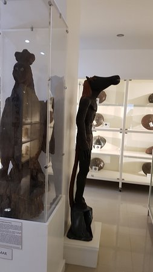

Tikbalang



Overview: The Tikbalang is a mythical creature from Philippine folklore that is said to have the body of a human and the head of a horse. It is known to play tricks on travelers, leading them astray in the forests or mountains.
Physical Pescription
- Head of a horse, body of a human
- Tall and thin with elongated limbs
- Long black hair and glowing eyes
Cbilities
- Trickery: It leads travelers off their path to confuse them.
- Speed: Tikbalangs are very fast and can outrun humans.
- Control over animals: It can summon wild animals to assist in its mischief.
Weaknesses
- Turning one's shirt inside-out will confuse the Tikbalang, causing it to lose its power over the traveler.
- Offering a prayer to the Tikbalang is also said to ward it off.
Cultural Significance
The Tikbalang is a prominent figure in Filipino folklore, often cited as a cause for people getting lost in rural areas. It is also a symbol of mischief and trickery, warning travelers to stay on their path and avoid straying into unknown territory.